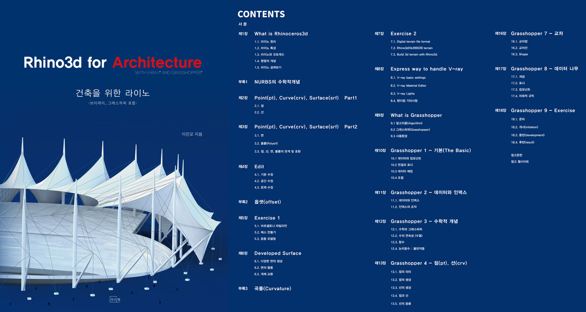

This is a korean book for Rhino3D. It provides readers with specialized use of rhino in architecture design, not product design or jewerly design. With proper mdoeling logics, variety of tips and guides, this book can help reader realize their design in virtual 3d space. In the book, starting from basic geometry concepts, such as points, line, and curve, advancing to concepts of surface and three dimensional geometry, novice can be easily understand the principles of rhino in architecture. Furthermore, V-ray and Grashopper are introduced to show elementary and rudimentary use of them in architecture, understanding their operation and principles.

You can download examples used in the book on the right column.